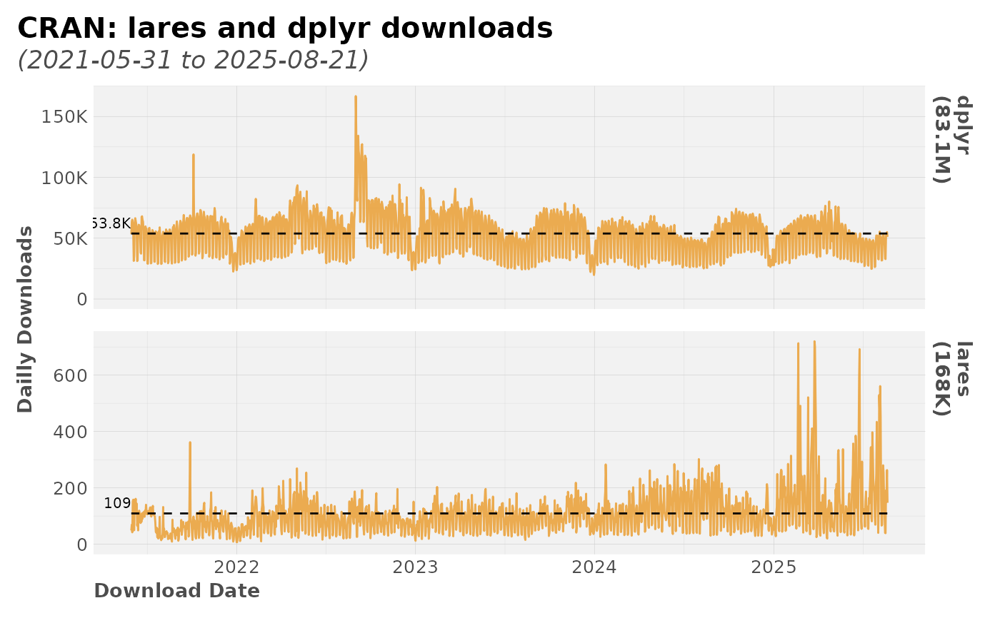

Download daily downloads stats from CRAN for any package, and plot.
It can also be used as an auxiliary function to plot
(cranlogs::cran_downloads) results.
Examples
# \donttest{
cran_logs(c("lares", "dplyr"), from = "2021-05-31")
#> $df
#> # A tibble: 3,264 × 3
#> date count package
#> <date> <int> <chr>
#> 1 2025-11-24 148 lares
#> 2 2025-11-24 73051 dplyr
#> 3 2025-11-23 43 lares
#> 4 2025-11-23 53870 dplyr
#> 5 2025-11-22 96 lares
#> 6 2025-11-22 50088 dplyr
#> 7 2025-11-21 271 lares
#> 8 2025-11-21 64568 dplyr
#> 9 2025-11-20 206 lares
#> 10 2025-11-20 71656 dplyr
#> # ℹ 3,254 more rows
#>
#> $plot

#>
# }